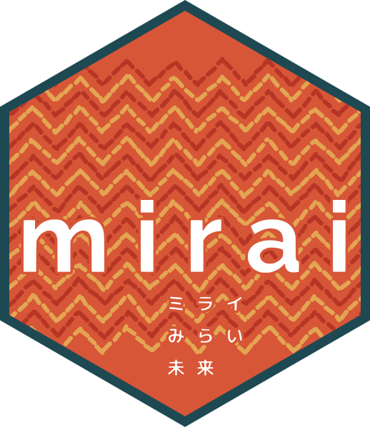

mirai + mori from Shiny to the Cluster
Open Source, Posit PBC
Photo by Lucas Cogrossi on Unsplash
Scale further. Scale safely.
Photo by Margarita B on Unsplash
Async is never waiting for a result
Recovery — not prevention
try_mirai()mirai() blockstry_mirai() → NULLuser warning · automatic retry · fallback
library(mori)Photo by Zoshua Colah on Unsplash
One copy. Many readers.
share() once — 200 MB becomes 200 BSame headroom supports many more users
Scaling production workloads — where we left you in 2025
Deploy everywhere — now with further reach
Photo by Todd Quackenbush on Unsplash
Never block. Never copy.
install.packages(c("mirai", "mori"))

Photo by Todd Quackenbush on Unsplash
posit::conf(2026) · Houston